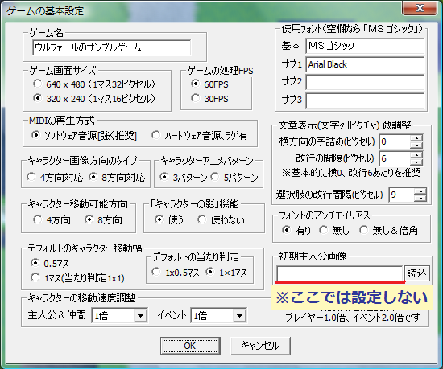

| 基本システムを使用すると、「ゲームの基本設定」の「初期主人公画像」を設定しても画像は反映されません。 これは、ゲームを開始した直後に基本システムが 「キャラグラフィックを、可変DB タイプ3 に設定された初期パーティーに自動的に変更する」 という処理を行っているため、「初期主人公画像」ではなく、この「初期パーティー」 のグラフィックになっているからです。 なので、主人公のグラフィックを設定したい時は ◆主人公の歩行グラフィックを設定したいを見て設定してください。 →初期パーティーの設定が分からない時は、◆ゲーム開始時のパーティーを設定したいを参考に。 |
 |
＜執筆者：コロラル＞